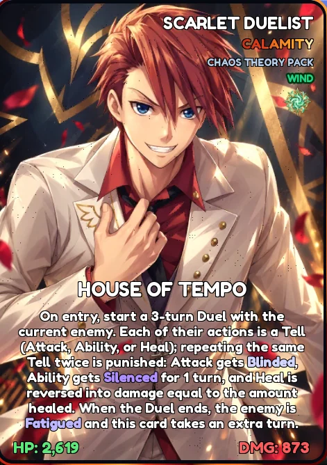
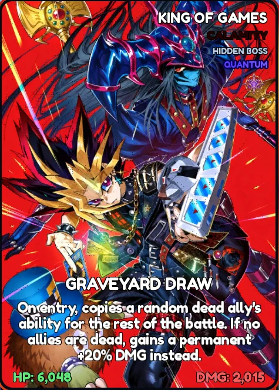
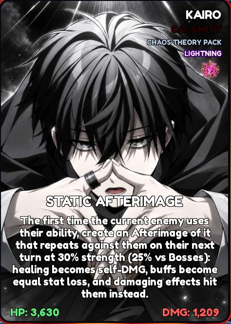
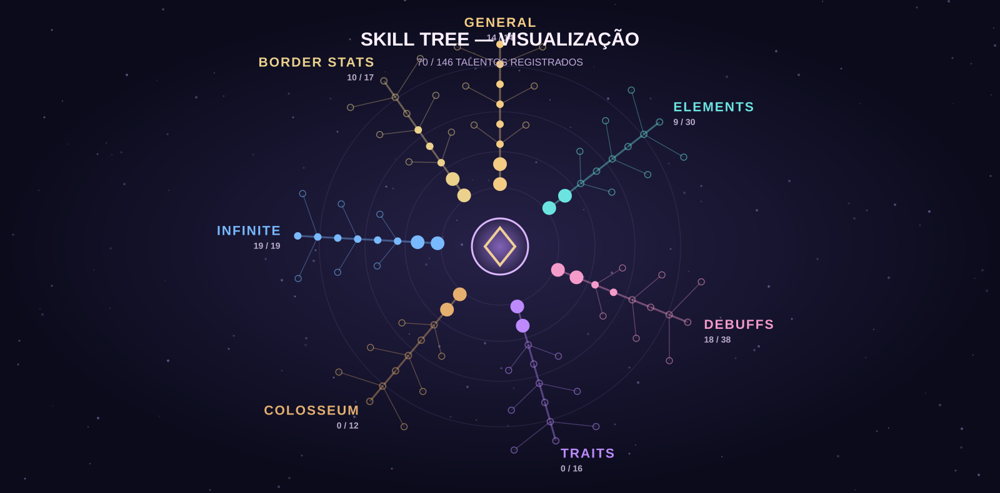

Explore sua coleção, descubra sinergias e monte a equipe ideal. Um codex construído a partir dos seus próprios registros.
Catálogo organizado a partir de registros de cartas



✧
CARTAS REGISTRADAS357Todos os elementos
SUPORTES37Buff • Heal • Debuff • Shield
ELEMENTOS07Dois ciclos elementais
SKILL TREE70/146Progresso registrado
COLEÇÃO EM DESTAQUE
Capturas verificadas ✦
TIME BUILD HELPER
Quatro cartas. Infinitas possibilidades.
Organize seus quatro slots, descubra circuitos adjacentes e visualize pares de reações possíveis na Tower of God.
SEU INVENTÁRIO
Distribuição elemental
Esta wiki é um projeto de fã. O catálogo foi organizado a partir de nomes de cartas registrados. Apenas algumas artes e habilidades foram verificadas visualmente; as demais artes ainda não foram incluídas.
ARCHIVE / 01
Catálogo de cartas
Filtre os registros por elemento, borda, variante ou nome. Clique em uma carta para ver seus detalhes.
REGISTROS ENCONTRADOS357
Carregando cartas...
ARCHIVE / 02
Cartas de suporte
Suportes equipados no mesmo slot da carta principal. Busque pelo nome ou classificação registrada no arquivo.
REGISTROS ENCONTRADOS37
Catálogo de suportes
TACTICAL LAB / 03
Seu Deck
Monte o Team 1 com 4 cartas e 4 suportes, seguindo o painel do jogo. Veja os circuitos entre os slots e as reações possíveis.
Os circuitos ligam somente cartas adjacentes. Os pares de reação da Tower consideram toda a equipe.
ORIGINS / DECK BUILDER
DECK // TEAM 1
INFINITE ◆ EXEMPLO DO PRINT
TEAM 1 4 cartas em ordem0 / 3 CIRCUITS
SUPPORT CARDS um suporte por slotCLIQUE PARA TROCAR
Simulação da sua equipe: as alterações não modificam o Roblox.Toque na carta ou no suporte para trocar
ANÁLISE TÁTICA
Conexões e reações do time
ORIGIN CIRCUITS
Conexões adjacentes
TOWER OF GOD
Reações potenciais
PROGRESSION / 04
Skill Tree
Mapa de talentos e progresso registrado no print de 08/11/2026.
SKILL POINTS03

VISÃO GERAL
70 / 146
Talentos aprendidos
03Pontos disponíveis
22Prontos para aprender
Os efeitos dos talentos individuais ainda dependem de capturas ampliadas da janela de cada talento.
CAMINHOS
Progresso por categoria
FIELD MANUAL / 05
Guia de mecânicas
Regras essenciais consolidadas a partir das capturas do guia e da sua wiki anterior.
GUIA DO JOGO
01 / ELEMENTAL
Ciclos de vantagem
Atacar o elemento contra o qual sua carta é forte causa +50% de dano. Na desvantagem, o dano cai 30% e o efeito elemental não ativa.
🔥 Fogo › ❄️ Gelo › ⚡ Relâmpago › 🍃 Vento › 🔥
✧ Quântico › ◈ Imaginário › ◆ Físico › ✧
Entre os dois ciclos, confrontos são neutros.
02 / ORIGIN CIRCUITS
Sinergia de vizinhos
Até três circuitos ativos: slots 1–2, 2–3 e 3–4. Há 7 Resonances de mesmo elemento e 12 Conversions de elementos diferentes.
3
conexões possíveis em uma formação de quatro cartas
03 / TOWER OF GOD
Quebre as Wards
Inimigos protegidos começam com 85% de redução de dano. Uma reação válida abre a proteção por 2 turnos. Depois de 2 usos da mesma reação, ela deixa de quebrar a Ward.
2+
pares diferentes de reação recomendados para a Tower
04 / RELICS
Sets de relíquias
Cinco slots: Crown, Core, Mantle, Sigil e Echo. Bônus de conjunto em 2 ou 4 peças, sem bônus de cinco peças.
Ashen CovenantShattered HaloHollow SanctuaryCalamity ScriptPrism of Origin
05 / UPGRADES
Bordas e raridade
Multiplicadores registrados no tutorial mais recente:
Normal ×1
Calamity ×100
Umbral ×10 mil
Astral ×1 milhão
Paradox ×100 milhões
Origin ×10 bilhões
06 / COMBAT
Efeitos e reações
O guia registra 74 reações entre debuffs. Em algumas combinações a ordem importa, e uma reação não desencadeia outra reação em cadeia.
BurnBleedFrostbiteShockPoisonFatigueCharmed
As regras desta página são um resumo de referência. Para valores detalhados, reações especiais e mudanças de versão, consulte o tutorial dentro do jogo.